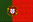

| |
Circuit |
Date |
Winner |
|
 |
Barcelona |
6 April |
#23 - T.Biaggi / M.Bobbi (BMS Scuderia
Italia - Ferrari 550 Maranello)  |
 |
 |
Magny-Cours |
27 April |
#23 - T.Biaggi / M.Bobbi (BMS Scuderia
Italia - Ferrari 550 Maranello) |
|
 |
Enna Pergusa |
11 May |
#23 - T.Biaggi / M.Bobbi (BMS Scuderia
Italia - Ferrari 550 Maranello) |
|
|
Brno |
25 May |
#23 - T.Biaggi / M.Bobbi (BMS Scuderia
Italia - Ferrari 550 Maranello) |
|
 |
Donington |
29 June |
#23 - T.Biaggi / M.Bobbi (BMS Scuderia
Italia - Ferrari 550 Maranello) |
|
 |
Spa Francorchamps |
26 July |
#22 - L.Cappellari / F.Gollin / L.Bryner /
E.Calderari (BMS Scuderia Italia - Ferrari 550 Maranello) |
|
 |
Anderstorp |
7 September |
#14 - J.Campbell-Walter / N.Kinch (Lister
Storm Racing - Lister Storm-Jaguar) |
|
 |
Oschersleben |
21 September |
#23 - T.Biaggi / M.Bobbi (BMS Scuderia
Italia - Ferrari 550 Maranello) |
|
|  |
Estoril |
5 October |
#9 - F.Babini / P.Peter (JMB Racing -
Ferrari 575 M Maranello)  |
|
|
Monza |
19 October |
#22 - L.Cappellari / F.Gollin (BMS Scuderia
Italia - Ferrari 550 Maranello) |
|